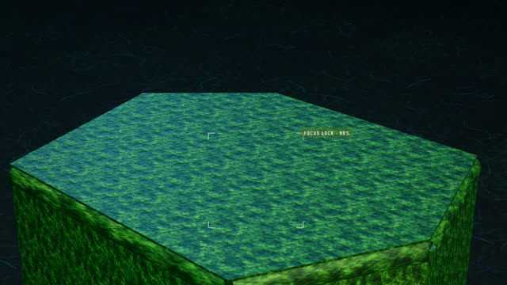
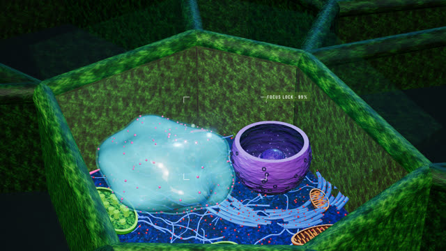
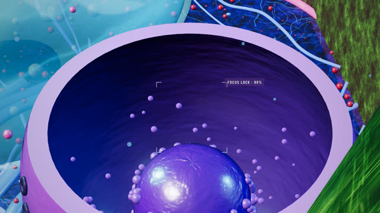
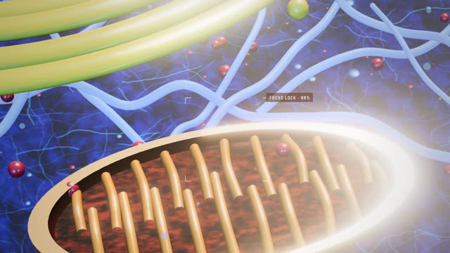
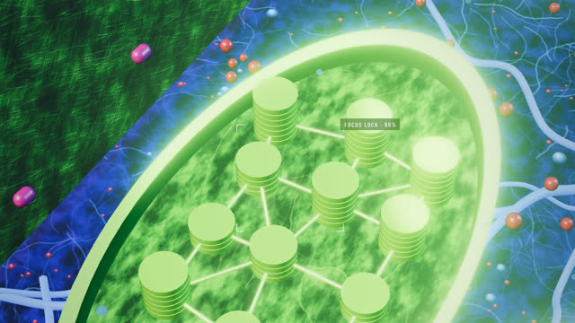
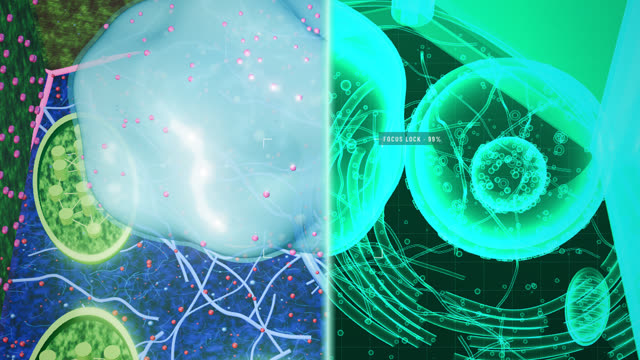

작업 흐름
- 입력
- 보여 줄 표본과 부분 목록, 또는 따라 만들 참고 영상
- 샷 표
- 부분마다 이름 · 역할 · 사실 세 줄 · 배율 · 카메라 (목표점, 거리, 방위, 고도, 초당 회전)
- 모델
- 다각형에서 세운 벽, 반으로 자른 그릇 모양 몸체, 덩어리, 관, 인스턴스 구슬. 2D 키트로 그린 텍스처와 범프
- 검사
- 샷마다 스틸 한 장과 전환 순간, 카메라가 물체 안에 들어가지 않았는지, 9:16과 4:5 모두
- 출력
- 1080×1920 · 1080×1350 MP4, 휴대폰에서 실시간으로 도는 라이브 페이지
cd specimen-tour
node scripts/render.mjs examples/plant-cell/index.html /tmp/st --stills 1.4,7,21 --size 1080x1920
RENDER_ARGS='--size 1080x1920 --query rs=0.67' bash scripts/render-chunked.sh examples/plant-cell/index.html out/plant-cell.mp4 7 4요구 사항: Node + Playwright Chromium (헤드리스 WebGL), ffmpeg. three.js와 폰트를 함께 담고 있어 네트워크 없이 돕니다. 단계별 순서는 SKILL.md에 있습니다.
샘플
식물 세포를 14개 부분으로 나눠 2초씩 들어가는 28초 영상의 장면입니다. 같은 영상을 3D와 Canvas 2D로 만들었고, 2D 키트로 다른 주제(원통형 배터리)도 만들었습니다. 카드를 누르면 새 탭에서 그 순간부터 라이브 페이지가 재생됩니다.
식물 세포 3D 14샷 · 28초 · 세로
three.js로 세운 육각 세포와 이웃 세포들. 닫힌 세포가 돌다가 뚜껑이 열리고, 카메라가 세포 소기관마다 돌며 들어갑니다.

샷 01 · 회전닫힌 육각기둥
뚜껑 덮인 세포 하나가 돌며 옆벽을 보여 줌, 이웃 세포는 숨김

샷 01 · 열림잘라 연 세포
뚜껑이 떠오르며 사라지고 이웃 세포들이 나타남

샷 04 · 핵위를 잘라 낸 핵
그릇 모양으로 자른 이중막, 핵공 고리, 안쪽의 인

샷 07 · 미토콘드리아크리스타
양쪽 내막에서 손가락처럼 뻗은 주름, 그 위를 도는 카메라

샷 11 · 엽록체그라나
스트로마 바닥에 선 틸라코이드 원반 더미, 원반은 인스턴스 하나

샷 14 · 엑스레이반 단면
오른쪽으로 쓸고 지나가는 절단선 너머를 프레넬 청록 재질로 다시 렌더
Canvas 2D 그린 정지 화면 · 세로
참고 영상처럼 부분마다 정지 화면을 한 장씩 그리고, 전체 단면을 거쳐 빠지고 들어가는 전환으로 잇습니다.
실제 작품
이 스킬은 이 레포에서 페이스북 릴스 「Claude Opus 5.5 · Plant cell」(AI로 만든 정지 화면에 HUD를 얹은 영상)을 코드만으로 다시 만들며 다듬어졌습니다.
링크
- SKILL.md 워크플로 · 규칙 · 계약
- 폴더 kit · scripts · references · examples
- README.md 빠른 시작
- references/STYLE-3D.md 3D 기법 · API · 샷 설계
- references/STYLE-2D.md 2D 키트 · 그리는 기법
- references/LESSONS.md 겪은 문제와 해결